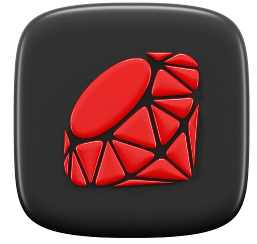

Ruby
▶
Einführung
Installation und Einrichtung
Interpreter und IRB
Code ausführen
Grundlegende Syntax und Struktur
Variablen
Datentypen
Symbole
Konstanten und Namenskonventionen
Arithmetische Operatoren
Vergleichsoperatoren
Logische Operatoren
Zuweisungsoperatoren
Operator-Prändenz
Bedingungen
Case-Anweisungen
Schleifen
Each-Iteration
break, next, redo, retry
Arrays
Hashes
Sets und Ranges
Methoden definieren
*args, **kwargs
Rekursion
Blöcke
Procs
Unterschiede zwischen Proc und Lambda
Module definieren
Namensräume mit Modulen erstellen
Unterschiede zwischen include und extend
Klassen und Objekte erstellen
Instanzvariablen
Klassenvariablen
Vererbung
Polymorphismus
Methodenüberschreibung
Abstrakte Klassen
Interfaces
Singleton-Klassen
Metaprogrammierung
Fehlerbehandlung
Fehlerklassen erstellen
Threads
Enumeration
Dateiverarbeitung
Gems und Paketverwalltung
Virtual Environments
Debugging
Unit Testing
Benchmarking
Einführung in Ruby On Rails
On Rails Installation und Einrichtung
On Rails MVC-Architektur
On Rails Routing
On Rails Controller
On Rails Views und ERB
On Rails Active Record
On Rails Migrations
On Rails Formulare und Validierung
On Rails REST-APIs
On Rails Sessions und Cookies
On Rails Authentication
On Rails Authorization
On Rails Background Jobs
On Rails Caching
On Rails Deployment
On Rails Testing
On Rails Debugging
▶